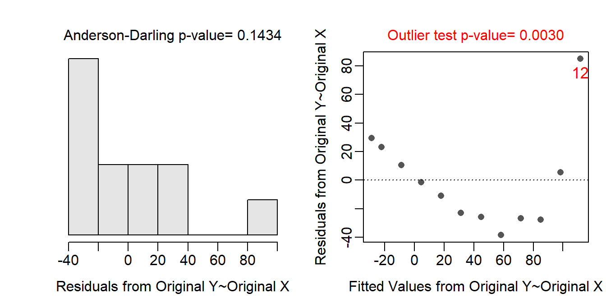
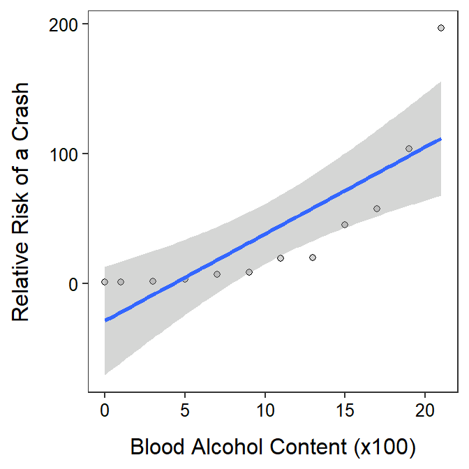
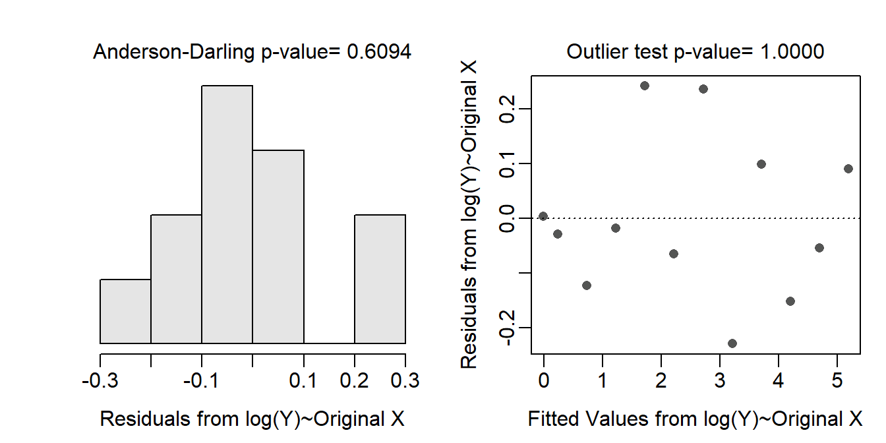

Module 18 SLR Transformations
The five assumptions of SLR and methods to assess their validity were introduced in Module 17. If one or more of the linearity, homoscedasticity, normality, or outlier assumptions are violated, then the data may be transformed to a different scale where the assumptions may be met. Either the response variable, explanatory variable, or both may be transformed. In general, the family of power transformations (see Section 8.1) will be considered for both the response and explanatory variables, although some special transformations can be used in specific situations (e.g., \(\sin^{-1}\sqrt{Y}\) for proportions or percentage data).
Power transformations may be selected based on theory, trial-and-error until assumptions are met, or from past experience. Transformations from two common theoretical relationships and the trial-and-error method are discussed in the next two sections.
18.1 Transformations from Theoretical Relationships
18.1.1 Power Functions
A power function is represented by \(Y=aX^{b}\) where \(Y\) and \(X\) are variables (as always) and \(a\) and \(b\) are parameters to be estimated. The power function is quite common and has been used to model relationships between the weight and length (or height) of animals, demand for money based on inventory theory, metabolic rate and body mass, money over time (with discretely compounded interest), and drug dose and size, among other applications.
Functions with exponents will generally be non-linear.85 Thus, a power function is non-linear and will show a period of increasing increase if \(b>1\), decreasing increase if \(0<b<1\), or decreasing decrease if \(b<0\) (Figure 18.1).
Figure 18.1: Shapes of power function for three values of the b exponent. Note that this is plotted on the raw or original scale.
As a general rule, taking the logarithm86 of both sides of a function that has an exponent tends to “linearize” that function. Showing this rule relies on the following three properties of logarithms.
- The log of a product is the sum of the logs – i.e., \(log(uv)=log(u)+log(v)\)
- The log of a base with an exponent is the exponent times the log of the base – i.e., \(log(u^{v})=vlog(u)\)
- The log of the number \(e\) is 1 – i.e., \(log(e)=1\)
Thus, taking the logarithm of both sides of the power function simplifies as follows:
\[ \begin{split} log(Y) &= log(aX^{b}) \\ \vdots \;\;\;\; &= log(a) + log(X^{b}) \\ log(Y) &= log(a) + blog(X) \end{split} \]
The final result is the equation of a line where the response variable is \(log(Y)\), the explanatory variable is \(log(X)\), the y-intercept is \(log(a)\), and the slope is \(b\). Thus, a power function is “linearized” by log-transforming both the response and explanatory variables. For example, the power functions shown in Figure 18.1 are shown again in Figure 18.2 but are plotted with both axes on the log scale.
Figure 18.2: Same as previous figure but with both axes plotted on the logarithm scale.
Transforming both the response and explanatory variable to the logarithm scale will “linearize” a power function relationship.
In some instances the researcher may be interested in the value of \(a\) and \(b\) for the original power function. These values may be found by fitting a SLR to \(log(Y)\) and \(log(X)\) and noting from above that the y-intercept is an estimate of \(log(a)\) and the slope is an estimate of \(b\). Thus, \(b\) is simply the slope. An estimate of \(a\) requires back-transforming the y-intercept value as shown below
\[ \begin{split} \text{y-intercept} &= log(a) \\ e^{\text{y-intercept}} &= e^{log(a)} \\ e^{\text{y-intercept}} &= a \end{split} \]
Thus, \(a\) is estimated by raising the estimated y-intercept to the power of \(e\).
The parameters for a power function are estimated by fitting a SLR to \(log(Y)\)-\(log(X)\) transformed data and estimating \(b\) with the slope and \(a\) with the back-transformed intercept, i.e., \(a=e^{\text{y-intercept}}\)
18.1.2 Exponential Functions
An exponential function is represented by \(Y=ae^{bX}\) where \(Y\), \(X\), \(a\) and \(b\) are defined as with a power function. Exponential functions are also quite common and have been used to model growth of organisms over time (with unlimited resources), change in money over time with continuously compounded interest, prognostication for recovery and number of days in the hospital, and radioactive decay over time.
Figure 18.3: Shapes of an exponential function for two values of the b parameter. Note that this is plotted on the raw or original scale.
Again, the exponential function has an exponent so we can try to linearize this function by applying logarithms to both sides.
\[ \begin{split} log(Y) &= log(ae^{bX}) \\ \vdots \;\;\;\; &= log(a) + log(e^{bX}) \\ log(Y) &= log(a) + bX \end{split} \]
Thef inal result is the equation of a line where the response variable is \(log(Y)\), the explanatory variable is unchanged at \(X\), the y-intercept is \(log(a)\), and the slope is \(b\). Thus, an exponential function is “linearized” by log-transforming only the response variable. The exponential functions shown in Figure 18.3 are shown again in Figure 18.4 but are plotted with the y-axis on the log scale.
Figure 18.4: Same as previous figure but plotted with the y-axis on the logarithm scale.
Transforming only the response variable to the logarithm scale will “linearize” an exponential function relationship.
Estimates of \(a\) and \(b\) from the original exponential function are found by fitting a SLR to \(log(Y)\) and \(X\) and noting from above that the y-intercept is an estimate of \(log(a)\) and the slope is an estimate of \(b\). Thus, \(b\) is simply the slope and \(a\) is estimated with \(e^{\text{y-intercept}}\), exactly as with the power function.
The parameters for an exponentnial function are estimated by fitting a SLR to \(log(Y)\)-\(X\) data and estimating \(b\) with the slope and \(a\) with the back-transformed intercept, i.e., \(a=e^{\text{y-intercept}}\)
18.2 Trial-and-Error Method
Transformations can be chosen by trying power transformations until the assumptions are met, as was discussed in Section 8.1. The big difference with SLR is that either the response, the explanatory, or both variables can be transformed. The following rules can be followed to simplify the process of finding a transformation or transformations by trial-and-error.
- Try transforming only the response variable first. Work though the list of power transformations as described in Section 8.1 (i.e., start with a log transformation, then the square root, cube root, etc.).
- If transforming the response does not meet the assumptions then try transforming the explanatory variable with the logarithms (and with the response variable untransformed).
- If transforming the explanatory to logarithms alone does not meet the assumptions then leave the explanatory variable transformed to logarithms and then work through the ladder of transformations for the response.
Note that with the above process that you will (i) try to find a transformation of just the response variable first and (ii) will only every transform the explanatory variable to the logarithm scale. Additionally, you should try hard to avoid “odd” combinations of transformations. In other words, it is better to use logs for both the response and explanatory variable if the assumptions are slightly not met then to use, for example, the square root of the response variable and the logarithm of the explanatory variable.
The trial-and-error method can be completed with assumptionCheck() largely as descried in Section 8.1 but noting that both lambday= and lambdax= may be used for the \(Y\) and \(X\) variables, respectively.
18.3 Back-Transformation in SLR
Back-transformations were discussed in detail in Section 8.3 and many of those details pertain here. In SLR, the y-intercept, fitted values, and predicted values are all “point estimates” and can be back-transformed from any transformation without issue. In other words, you can simply reverse the transformation for these values, no matter what transformation was used, and interpret the value directly on the original scale.
The slope, however, is a “difference” in means and can only be back-transformed if a log transformation was used, as discussed in Section 8.3. A slope back-transformed from the log scale (for the response variable) has a specific meaning but the exact wording of that meaning depends on whether the explanatory variable was log-transformed or not.
We begin by addressing the slope back-transformed from the log-scale for the situation where the explanatory variable was NOT log-transformed. First, note that the the slope (\(\beta\)) on the log-transformed scale describes how the mean log of \(Y\) changes for a one unit change in \(X\); i.e.,
\[ \begin{split} log\left(\mu_{Y|X+1}\right)-log\left(\mu_{Y|X}\right) &= \left[\alpha+\beta (X+1)\right] - \left[\alpha+\beta X\right] \\ \vdots \;\;\;\;\;\;\;\;\;\;\;\;\;\;\;\; &= \left[\alpha+\beta X\right]+\beta - \left[\alpha+\beta X\right] \\ log\left(\mu_{Y|X+1}\right)-log\left(\mu_{Y|X}\right) &= \beta \end{split} \]
Thus, \(log(Y)\) changes by adding \(\beta\) as \(X\) increases by 1 unit. In other words, \(\beta\) is a difference in two means (the mean of \(log(Y)\) at \(X\)s that are 1 unit apart). For example, in Figure 18.5-Left, the slope on the log-transformed scale indicates that for a one unit increase in \(X\) that the predicted value of \(log(Y)\) increases by adding 0.25 units.
Figure 18.5: Demonstration of the additive nature of the slope on the log-scale (Left) and multiplicative nature of the back-transformed slope on the original scale (Right).
However, when both sides of the above equation are raised to the power of \(e\) (i.e., back-transformed)
\[ \begin{split} e^{\beta} &= e^{log(\mu_{Y|X+1})-log(\mu_{Y|X})} \\ \vdots \;\; &= e^{log\left(\frac{\mu_{Y|X+1}}{\mu_{Y|X}}\right)} \\ e^{\beta} &= \frac{\mu_{Y|X+1}}{\mu_{Y|X}} \end{split} \]
it becomes clear that \(e^{\beta}\) is no longer a difference in means, rather it is a ratio of two means. Thus, the mean of \(Y\) (on the original scale) at \(X+1\) is a multiple of the mean of \(Y\) at \(X\). Therefore, on the original scale you multiply rather than add when increasing \(X\) by 1 unit. For example, in Figure 18.5-Right, a one unit increase in \(X\) (the original scale) results in a \(Y\) that increases by a multiple of 1.284. For example, an increase in \(X\) from 4 to 5 results in an increase in \(Y\) from 2.72 to 3.49 (=2.27×1.284). Similarly, an increase in \(X\) from 8 to 9 results in an incrase in \(Y\) from 7.39 to 9.49 (=7.39×1.284).
For negative relationships, the same principle holds except that the back-transformed slope will be less than 1 so that an increase in \(X\) results in a multiplicative decrease in \(Y\) (Figure 18.6).
Figure 18.6: Demonstration of the additive nature of the slope on the log-scale (Left) and multiplicative nature of the back-transformed slope on the original scale (Right).
The slope back-transformed from a log-transformation represents the ratio of two means separated by one unit of the explanatory variable on the original scale when the explanatory variable was not transformed.
If the explanatory variable was also log-transformed then the interpretation of the back-transformed slope is more complicated. In this case, we must also “back-transform” the “one unit increase” in \(log(X)\) when considering the back-transformed slope on the original scale. Thus, the slope back-transformed from the case where both the response and explanatory variable were log-transformed is the multiplicative change in \(Y\) when \(X\) is multiplied by \(e^{\beta}\)=2.718.
For example, in Figure 18.7 the slope on the log-log-transformed scale is 0.25. Thus, \(log(Y)\) increases by adding 0.25 when \(log(X)\) increases by 1 unit. However, on the original scale \(Y\) increases by a multiple of \(e^{0.25}\)=1.284 each time that \(X\) increases by a multiple of \(e^{1}\)=2.718. For example, when \(X\) increases from 7.39 to 20.98 (7.39×2.718) then \(Y\) increases from 1.65 to 2.12 (=1.65×1.284). As another example, when \(X\) increases from 54.60 to 148.41 (54.60×2.718) then \(Y\) increases from 2.72 to 3.49 (=2.72×1.284).
Figure 18.7: Demonstration of the additive nature of the slope on the log-log-scale (Left) and multiplicative nature of the back-transformed slope (and multiplicative change along the x-axis) on the original scale (Right).
The slope back-transformed from a log-transformation represents the ratio of two means separated by a multiple of 2.178 units of the explanatory variable on the original scale when the explanatory variable was log-transformed.
A slope back-transformed from the log-scale represents a multiplicative (rather than additive) change in the mean response.
Do NOT back-transform slopes if other than a log transformation was used.
18.4 Examples
The following are some quick examples of transforming data, fitting new models, and interpretations of those model results. These are not full examples in the sense that all assumptions are thoroughly met, etc. Full examples will be demonstrated in Module 19.
18.4.1 Petrels
Croxall (1982) examined the weight loss of adult petrels during periods of egg incubation. He examined 13 species but some had measurements for both sexes such that 19 measurements were recorded. For each measurement the mean initial weight (g) and mean weight lost (g/g/d) were recorded. The intent of this part of the study was to determine if the mean initial weight significantly explained variability in mean weight lost for the petrel species.
The data are loaded below, the initial SLR is fit with weight loss as the response variable, and the assumptions are quickly checked. It is clear that the form of the relationship is not linear. The other assumptions are also not met, but these are likely affected by the non-linearity.
petrels <- read.csv("http://derekogle.com/Book207/data/Petrels.csv")
str(petrels)#R> 'data.frame': 19 obs. of 4 variables:
#R> $ species : chr "Diomedea exulans" "Diomedea exulans" "Diomedea melanophris" "Diomedea melanophris" ...
#R> $ sex : chr "male" "female" "male" "female" ...
#R> $ weight : int 10577 9022 3922 3694 3751 3624 3305 3000 2996 668 ...
#R> $ weight.loss: num 0.0087 0.0096 0.013 0.011 0.01 0.012 0.011 0.0125 0.0109 0.0128 ...lm.ptrls1 <- lm(weight.loss~weight,data=petrels)
assumptionCheck(lm.ptrls1)
Through a process of trial-and-error, it appears that log-transforming both weight loss and initial weight results in the assumptions being met. Thus, log-transformations for both variables were added to the data.frame and were used in a second linear model.
assumptionCheck(lm.ptrls1,lambday=0,lambdax=0)petrels$logwtloss <- log(petrels$weight.loss)
petrels$logwt <- log(petrels$weight)
lm.ptrls2 <- lm(logwtloss~logwt,data=petrels)
There is a significant relationship between log mean weight loss and log mean initial weight (p<0.00005). It appears that 89.2% of the variability in log mean weight loss is explained by knowing the log mean initial weight of the birds.
anova(lm.ptrls2)#R> Analysis of Variance Table
#R>
#R> Response: logwtloss
#R> Df Sum Sq Mean Sq F value Pr(>F)
#R> logwt 1 6.5113 6.5113 140.65 1.204e-09
#R> Residuals 17 0.7870 0.0463rSquared(lm.ptrls2)#R> [1] 0.8921662ggplot(data=petrels,mapping=aes(x=logwt,y=logwtloss)) +
geom_point(pch=21,color="black",fill="lightgray") +
labs(x="log Mean Initial Weight",y="log Mean Weight Loss") +
theme_NCStats() +
geom_smooth(method="lm")
The slope indicates that as the log mean initial weight increases by 1 then the log mean weight loss will decrease by between 0.276 and 0.396. Because both the response and the explanatory variable were log-transformed, the back-transformed slope means that as the mean initial weight increases by a multiple of 2.718 then the mean weight loss is multiplied by between 0.673 and 0.758. In other words, as the mean initial weight increases by a multiple of 2.718 then the mean weight loss decreases by a multiple between 0.673 and 0.758.
( cfs <- cbind(Ests=coef(lm.ptrls2),confint(lm.ptrls2)) ) ## log-log scale #R> Ests 2.5 % 97.5 %
#R> (Intercept) -1.7340329 -2.1516113 -1.3164546
#R> logwt -0.3363196 -0.3961507 -0.2764885exp(cfs) ## back-transformed to original scale#R> Ests 2.5 % 97.5 %
#R> (Intercept) 0.1765709 0.1162966 0.2680841
#R> logwt 0.7143948 0.6729053 0.7584423The predicted log mean weight loss for a bird species with a mean initial weight of 4000 g is between -4.998 and -4.049. However, back-transformed to the original scale, the predicted mean weight loss for a bird species with a mean initial weight of 4000 g is between 0.0068 and 0.0174 g/g/d.
iw <- 4000
nd <- data.frame(logwt=log(iw))
( p4000 <- predict(lm.ptrls2,newdata=nd,interval="predict") ) # log scale#R> fit lwr upr
#R> 1 -4.523484 -4.998201 -4.048767exp(p4000) # back-transformed to original scale#R> fit lwr upr
#R> 1 0.01085115 0.006750078 0.01744386
18.4.2 BAC and Crashing
A study was published in 2007 that investigated the relative risk of being in a crash (RRC) relative to a person’s blood alcohol content (BAC). The researchers examined data from 2871 crashes and derived a measure of the relative risk of being in a car accident. The relative risk was scaled so that individuals with a blood alcohol content of 0 had a relative risk of 1. Thus, all other relative risk values are in comparison to a driver with a BAC of 0. For example, a relative risk of 3 would mean that persons with that BAC level are three times more likely to be in a car accident than a person with a BAC of 0. The researchers wanted to explain how the relative risk of a crash was related to BAC level. [Note that BAC was multiplied by 100 so that a one unit change would be within the range of the data and, thus, would be meaningful.]
The data are loaded below, the initial SLR is fit with relative risk of a crash as the response variable, and the assumptions are quickly checked. It is clear that the form of the relationship is not linear. The scatterplot also clearly shows that a linear model is not appropriate for these data. The other assumptions are also not met, but these are likely affected by the non-linearity.
cr <- read.csv("http://derekogle.com/Book207/data/crash.csv")
str(cr)#R> 'data.frame': 12 obs. of 2 variables:
#R> $ BAC: int 0 1 3 5 7 9 11 13 15 17 ...
#R> $ RRC: num 1 1.24 1.85 3.37 7.17 ...lm.cr <- lm(RRC~BAC,data=cr)
assumptionCheck(lm.cr)
ggplot(data=cr,mapping=aes(x=BAC,y=RRC)) +
geom_point(pch=21,color="black",fill="lightgray") +
labs(x="Blood Alcohol Content (x100)",y="Relative Risk of a Crash") +
theme_NCStats() +
geom_smooth(method="lm")
Through a process of trial-and-error, it appears that log-transforming just the relative risk of a crash results in the assumptions being met. A second linear model was fit with log relative risk of a crash.
assumptionCheck(lm.cr,lambday=0)
cr$logRRC <- log(cr$RRC)
lm.cr2 <- lm(logRRC~BAC,data=cr)
There is a significant relationship between log relative risk of a crash and blood alcohol content (p<0.00005). It appears that 99.3% of the variability in log relative risk of a crash is explained by knowing the blood alcohol content.
anova(lm.cr2)#R> Analysis of Variance Table
#R>
#R> Response: logRRC
#R> Df Sum Sq Mean Sq F value Pr(>F)
#R> BAC 1 33.690 33.690 1452.2 3.692e-12
#R> Residuals 10 0.232 0.023rSquared(lm.cr2)#R> [1] 0.9931612ggplot(data=cr,mapping=aes(x=BAC,y=logRRC)) +
geom_point(pch=21,color="black",fill="lightgray") +
labs(x="Blood Alcohol Content (x100)",y="log Relative Risk of a Crash") +
theme_NCStats() +
geom_smooth(method="lm")
The slope indicates that as the blood alcohol content increases by 0.01 (because the BAC was multiplied by 100) then the log relative risk of a crash will increase by between 0.233 and 0.262. Because only the response variable was log-transformed, the back-transformed slope means that as the blood alcohol content increases by 0.01 then the relative risk of an accident increases by a multiple of between 1.262 and 1.299. So, as the blood alcohol content increases by 0.01 then the relative risk of an accident increases by between 26.2 and 29.9%.
( cfs <- cbind(Est=coef(lm.cr2),confint(lm.cr2)))#R> Est 2.5 % 97.5 %
#R> (Intercept) -0.003342789 -0.1789921 0.1723065
#R> BAC 0.247289672 0.2328310 0.2617483exp(cfs)#R> Est 2.5 % 97.5 %
#R> (Intercept) 0.9966628 0.8361125 1.188042
#R> BAC 1.2805500 1.2621682 1.299200
The predicted mean log relative risk of a crash for all drivers with a blood alcohol content of 0.10 (so 10 for the BAC variable) is between 2.116 and 2.823. However, back-transformed to the original scale, the predicted relative risk of a crash for all drivers with a blood alcohol content of 0.10 is between 8.30 and 16.82.
nd <- data.frame(BAC=10)
( p10 <- predict(lm.cr2,newdata=nd,interval="predict") )#R> fit lwr upr
#R> 1 2.469554 2.116327 2.822781exp(p10)#R> fit lwr upr
#R> 1 11.81717 8.300589 16.82358